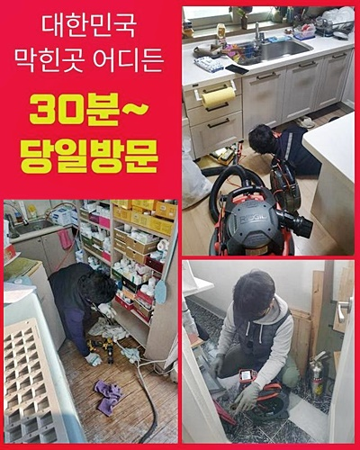
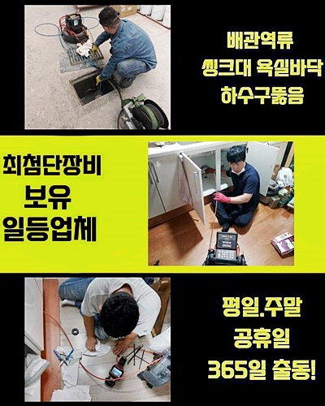
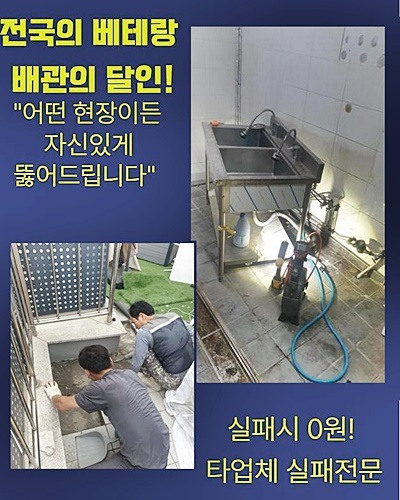
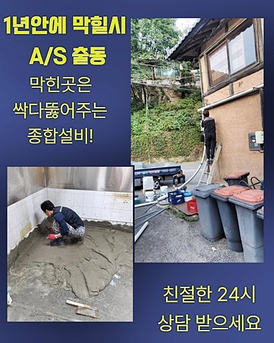
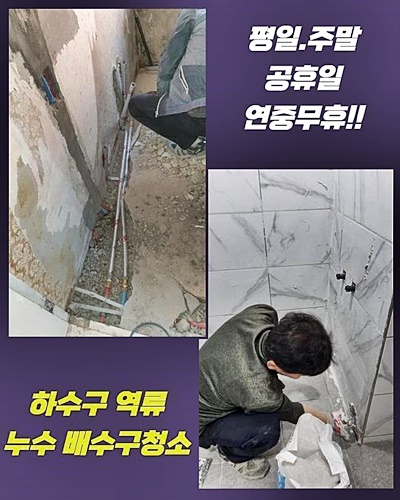
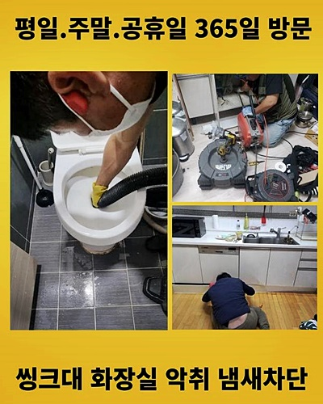
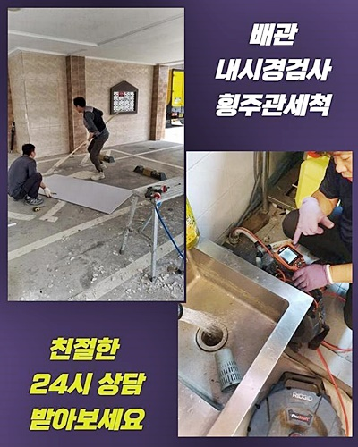

🏠 부평구 산곡동싱크대역류 일신동 하수구뚫어주는업체 수리업체
용인 싱크대막힘 전문 시공 후기

📋 작업 개요
- 위치: 용인
- 서비스 유형: 싱크대막힘, 하수구막힘, 배관막힘, 역류해결, 뚫는업체, 배관청소, 고압세척
- 작업 일시: 2024. 7. 14. 12:55
- 업체명: 하수구수사대 (010-5615-2118)
🔍 문제 상황
부평구 산곡동싱크대역류 일신동 하수구뚫어주는업체 수리업체
막힘증세는 일상에서 발생할수있으므로 조기대처를 취하시는것이 좋은데요
막힌원인과 상태에따라 적절히 조치해야하고 조속한조치로 뚫어드릴수있죠
고객님께서 원하시는대로 확실하게 대응해서 최상의서비스로 제공해드리고 있어요
배관막힘으로 인하여 불편함이 느껴지신다면 아무때나 연락주셔도 괜찮아요 최선을다하는 작업으로 도와드리도록 하겠습니다
최근엔 빌라쪽에 거주하는 손님분께서 하수도막힘증세로 연락을주셨어요
이번장소의경우 5-10년정도 지난 건물이었어요
욕실에서 역류가 발생하여 의뢰를 주셨는데요
빠른대응으로 의뢰자분의 편의들을 첫째로 신경쓰고있으며 원하시는시간에 내방하여 작업해드리고 있답니다
주말상관없이 출동을 진행하여 막힘으로인한 곤란함을 최소화시키려고 하고있어요
하수도에 얼마나 역류되고있는지 살피고 물을흘려보냈죠
하수구바닥쪽이 흥건한상태로 역류현상이 심각한것으로 보였죠
하수구내부를 들여다보니 이물질과 슬러지로인하여 막힌것같았죠
배수관이 막혀버리는건 갑작스럽게 일어나지않고 하수도를 사용하며 생기는 잔여물질이 쌓이게되며 막힘문제가 발생되는것이고 이러한점에대한 관리의필요성을 안내해드렸죠

🔎 원인 분석
💡 전문가 진단: 정밀 진단 장비를 사용하여 슬러지의 고착 여부를 판명하고 타격/세척 작업을 실시했습니다.
이로인해 고객분께서 궁금하셨던점을 해소할수가 있었답니다
이번장소의경우 이물세척이 충분하지못한것이 원인이었답니다
오염물이 축적되어서 물이정상적으로 흐르지못했어요
하수구카메라를 사용하며 청소과정을 꼼꼼하게 설명해드렸어요
오랜기간이 흘러서 잔여물의형태가 어떠한지 자세히 알수없더라도 조속히대처하여 해결할수있었어요
동일한현상이 발생하지않게끔 심혈을기울인 확실한서비스로 보여드릴것을 약속할게요
내부이물을 정확하게 제거해내야하죠
날카로운 도구들을 활용해서 셀프적으로 시도해보지만 확실히뚫는건 불가하고 내버려둘경우 도리어문제를 증폭시킬수있어요
그렇기때문에 전문가를 통하여 안속이물질을 확실히 제거시켜야합니다
이러한현상은 조심스럽지 않게써서 발생할수있는데 식기를 세척할때 기름기나 음식물들이 하수구내에 퇴적이되며 발생하는데요
배관이막혀 연락주신 의뢰자를위하여 신속히 작업장소로 출동했어요
상황파악을하고자 전문장비들을 준비해서 작업에 들어갔어요
오염물을 제거하는건 석션도구나 샤프트기를 써서 해결되고있어요
오염물이 쌓인곳은 고압세척과정을 착수해 제거하고 잔여물은 썩션기를써서 빼내고있답니다

🔧 작업 과정
확실하게 이물질들을 소거하고 하수도를 깨끗히 유지시키는데 최선을다해요
이런식으로 청소작업을 진행해서 곤란한부분을 해소시키고 예방법까지 알려드립니다
저흰 출동시간이 제한되지않죠
왜냐면 밤에도 하수구가 막히게되어 도움을 요청할수있기 때문이겠죠
저희에게 출동신청을 하셔가지고 최첨단도구들을 모두구비하여 급히 현장장소에 이동했는데요
화장실쪽에 들어가보니 심한냄새를 동원하며 심화된상태임을 알아차렸어요
샤워기를틀어 역류문제는 괜찮은지 세밀하게 살핀뒤 배수상태가 어떤지까지 검사해봤습니다
저희기술자가 방문해보기 며칠전에도 타업체에서 배관작업을 성공하지못했다고 하셨는데요
따라서 우리를 부르셨다고 합니다
저희들의경우 출장금액에관해 비용을 요구하지않으므로 좋은조건인것 같다고 말씀해주셨죠
성공한뒤에도 AS까지 진행하기때문에 만족하셨습니다
하수도내부를 들여다보고자 내시경기계를 이용했어요
하수도상태를 체크해보니 오염물이 보이는것을 살펴볼수 있었는데요
효율적이게 문제해결하고자 최선을다했으며 성공적인결실을 전달할수있었죠
하수도내에 퇴적된 잔여물을 없애기위해 석션을이용한 세척이 이루어졌어요
흡입작업후 물빠짐상태가 확실하게 이루어지는지 보기위해 흘려보내보았지만 배수가깔끔히 이루어지지않는걸 발견하였어요
그래서 배관내시경을 사용해서 하수관안을 세세히 관찰했는데요
관찰도중 카메라장비가 들어가지않는 지점이보여 세밀한대처를 취할수있었어요
샤프트장비를 활용해서 고착이물까지 제거해보니 원활히 물이빠지는걸 확인가능했어요
요청하신 시간에맞춰 작업을 마무리하고 방지할수있는 방식까지도 알려드렸어요
의뢰자분의 협조를통해 확실한작업이 착수되었죠
막힘현상을 처음경험해서 혼란스러우시고 막힌이유에 대하여 알지못하여 답답하실거에요


✅ 작업 완료
막힘때문에 일상영위시 지장이갈경우 초기에 조치해보는게 좋기때문에 언제나 저희들한테 의뢰하시면 됩니다
하수도를 뚫어내기위해 성의를다하여 작업하겠습니다
한번더 강조드리는것으로 막힘현상은 방치하게되면 2차피해로 연결될수있으므로 막히는징조가 나타날때 대처하시는게 좋답니다
1시간안으로 현장에 도착해드릴수있으니 전화만주시면 신속빠르게 달려가겠습니다
투명한 작업계획으로 공개하고있으니 염려하지마세요
이밖으로도 궁금한것이 있을경우 전화주셔도 여쭈셔도되니 맘편히 요청하시면 상세한상담으로 도와드려볼게요




⚠️ 주방 싱크대 배관 막힘 예방 수칙
- ✅ 기름기가 묻은 식기나 프라이팬은 설거지 전 키친타올로 반드시 기름때를 닦아내세요.
- ✅ 주기적으로 싱크대 개수대에 뜨거운 물을 가득 받아 한 번에 내려 배관 내부 기름을 씻어내세요.
- ✅ 배수구 거름망을 미세한 필터로 사용하시고 음식물 찌꺼기가 틈으로 새어 들지 않게 관리하세요.
- ✅ 베이킹소다와 식초를 뜨거운 물과 함께 일주일에 한 번씩 부어주면 배관 살균과 막힘 예방에 좋습니다.
💡 핵심 정리
- 확실한 장비 작업(내시경 점검 및 샤프트 스케일링)으로 원인을 뿌리 뽑습니다.
- 작업 후 1년 이내에 동일한 부위 재발 시 100% 무상 A/S 서비스를 보장합니다.
- 서울 · 경기 · 인천 전 지역에 24시간 언제든 긴급 출동할 수 있도록 항시 대기 중입니다.
❓ 자주 묻는 질문 (FAQ)
🚨 용인 싱크대막힘 문제로 고민이신가요?
정확한 원인 진단과 확실한 시공으로 재발 없는 해결을 약속드립니다.
24시간 긴급 출동 | 서울 · 경기 · 인천 전지역 | 1년 내 재발 시 무상 A/S